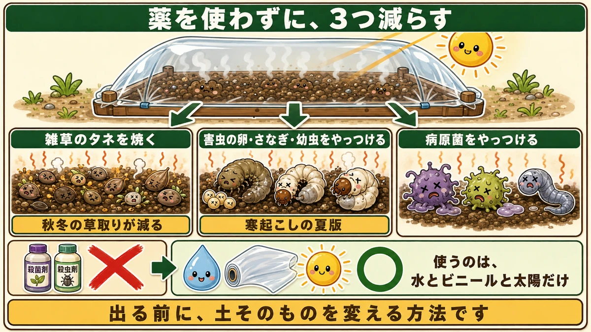
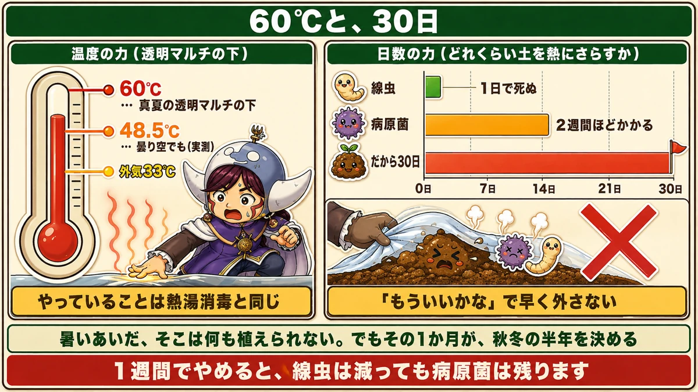
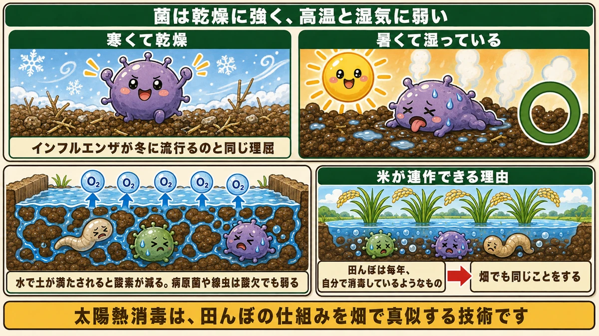
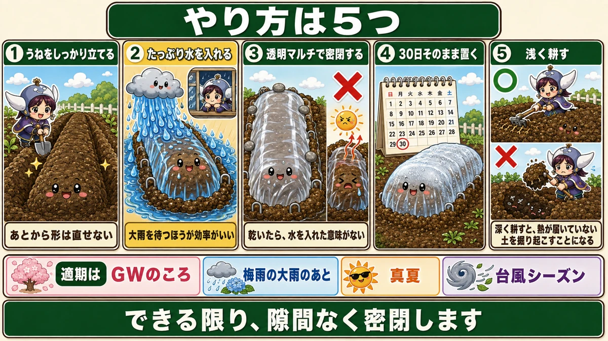

菌は乾燥に強く、高温と湿気に弱い☀️ だから水を入れて蒸します

🗨️「毎年、同じ場所で同じ病気が出る」
🗨️「連作障害が気になるけど、場所を変えられない」
🗨️「薬は使いたくない。でも何かしたい」
どうも、8150（えいこう）です🌱 家庭菜園歴8年、理科の教員免許を持っていて、有機・無農薬で野菜を育てています。
前回、お盆明けから秋冬野菜が始まるという話をしました。★その前に、土をきれいにしておく方法があります。
先に、この記事でいちばん言いたいことを言っておきます。
★菌は、乾燥に強く、高温と湿気に弱いんです。
だから土をカラカラに乾かすのではなく、★水を入れて、密閉して、蒸します☺️
太陽熱消毒とは
真夏の太陽だけで、土を消毒します
やることは単純です。
★うねに水をたっぷり入れて、透明マルチで密閉して、真夏の太陽に当てる。
それだけです。★薬は一切使いません。
★効果は3つ
これで、土の中の何が減るか。

★1. 雑草のタネを焼く
土の表面近くにある雑草のタネが、高温で死にます。★秋冬野菜の草取りが減ります。
★2. 害虫の卵・さなぎ・幼虫をやっつける
前にお話ししたネキリムシやコガネムシの幼虫も、この中にいます。★寒起こしの夏版だと思ってください。
★3. 病原菌をやっつける
青枯れ病、そして★線虫（センチュウ）。前にコンパニオンプランツのところでお話しした、根にコブを作るあの虫です。
★殺菌剤も殺虫剤も使いません
いちばんの利点がこれです。
★使うのは、水と、透明のビニールと、太陽だけ。
無農薬でやっていると、「出てからでは打つ手がない」という場面が多くあります。★これは、出る前に土そのものを変える方法です。
★★60℃まで上がります
実測の数字です
「本当にそんなに効くのか」と思われますよね。数字があります。
★真夏なら、透明マルチの下は60℃くらいまで上がります。

そして驚いたのが、これです。
★曇り空の日でも、48.5℃まで上がっていました。
★触ると低温やけどをしそうなくらいだそうです。
★熱湯消毒と同じです
60℃という温度は、★食品を殺菌する温度に近い数字です。
★やっていることは、熱湯消毒と同じです。
しかも★30日間、毎日それが続きます。
★透明マルチを使う理由
ここでひとつ、大事な使い分けがあります。
★黒マルチではなく、透明マルチを使ってください。
- ★黒マルチ … 光を遮って、自分が熱くなる。地温を上げる
- ★透明マルチ … 光を通して、中を温室にする
★温室と同じ理屈です。光を入れて、熱を逃がさない。
成功のサインもあります。★中で水蒸気が出て、マルチが白く曇ってきたら、うまくいっています。
★★菌は、高温と湿気に弱い
ここが今日いちばん面白いところです
なぜ「水を入れる」のか。乾かしたほうが良さそうな気がしますよね。
★逆です。
★菌は、乾燥に強い。でも高温と湿気には弱いんです。

★インフルエンザと、同じ理屈です
分かりやすい例があります。
★インフルエンザが冬に流行るのは、なぜでしょうか。
★寒くて乾燥していると、ウイルスが活発になるからです。逆に、★高温多湿の夏には流行りません。
★土の中の菌も、まったく同じです。
- 乾いていて涼しい → 生きのびる
- ★暑くて湿っている → 弱る
だから★水を入れて、密閉して、蒸す。これが理にかなっています。
酸素を切ることも効いています
もうひとつ、水を入れる意味があります。
★水で土が満たされると、土の中の酸素が少なくなります。
そして★病原菌や線虫は、酸素の少ない条件では、比較的低い温度でもやっつけられます。
★高温だけでなく、酸欠でも攻めている。二重の効果です。
★★米が連作できる理由と、同じです
ここで面白い話があります。
★お米は、毎年同じ田んぼで作れます。連作障害が出ません。
なぜでしょうか。
★田んぼが水に浸かる（湛水する）からです。
冬から春にかけて水を張ることで、★土の中の病原菌や線虫が、酸欠でやられていきます。★田んぼは、毎年自分で消毒しているようなものです。
★だったら、畑も同じことをすればいい。
水を張って、さらに太陽の熱で蒸す。★太陽熱消毒は、田んぼの仕組みを畑で真似する技術です。
前に連作障害の話をしましたが、★「なぜ米だけ平気なのか」の答えがこれでした。
やり方、5つの手順

1. うねを、しっかり立てる
先にうねを作っておきます。★あとから形を直せないので、ここで完成させてください。
前に梅雨の話をしたとおり、★高うねにしておくと水はけもよくなります。
2. ★★たっぷり水を入れる
いちばん大事な工程です。
★水を、たっぷり入れてください。
そして、これがコツです。
★大雨を待つほうが、効率がいいです。
ホースで入れるのは大変です。★梅雨の終わりの大雨、あるいは台風の雨。あの水を使います。
★天気予報を見て、大雨が来る前に準備しておく。降ったあとにマルチを張れば、水汲みの手間がゼロになります。
3. ★★透明マルチで、密閉する
ここも手を抜かないでください。
★できる限り、隙間なく密閉します。
理由があります。
★隙間から夏の熱風が吹き込むと、一気に土が乾きます。
そして★乾いてしまったら、水を入れた意味がなくなります。せっかくの「高温多湿」が「高温乾燥」になってしまう。★それでは菌は死にません。
- 裾に土をしっかり乗せる
- ★石を載せる
- ピンを打つ
前に台風のところで「裾の土を重みを感じるくらい乗せる」とお伝えしました。★同じ丁寧さでやってください。
4. ★30日、そのまま置く
★30日くらいは続けてください。
途中で開けたくなりますが、我慢です。理由は次の章でお話しします。
5. ★★そのあとは、浅く耕す
これは意外でした。
★終わったあと、深く耕してはいけません。
理由が明快です。
★深く耕すと、熱が届いていない下の土を、掘り起こしてくることになります。
せっかく消毒した表層に、消毒していない土を混ぜてしまう。★それでは元通りです。
★浅く、表面だけ。これを守ってください。
★★30日、粘る理由
相手によって、かかる日数が違います
なぜ30日なのか。ここに答えがあります。
★線虫（センチュウ）は、1日で死にます。
★病原菌は、2週間ほどかかります。
★「もういいかな」で外さない
つまり、こういうことです。
★1週間でやめると、線虫は減っても病原菌は残ります。
★2週間で、ようやく病原菌に効きはじめる。
だから★余裕を見て30日。★「もう十分だろう」で早く外さないでください。
★暑いあいだ、そこは何も植えられません。でもその1か月が、秋冬の半年を決めます。
適期はいつか
4回、チャンスがあります
やれる時期は1回ではありません。
- ★ゴールデンウィークのころ（気温が上がりはじめる）
- ★★梅雨の大雨のあと（水が手に入る）
- ★真夏（いちばん温度が上がる）
- ★秋の手前、台風シーズン（また大雨が来る）
★水と太陽が同時にそろう時期がいい、ということです。
7月がいちばん向いています
家庭菜園の流れで言えば、★7月がいちばん都合がいいと思います。
- ★梅雨の雨で、水が手に入る
- ★そのあと真夏の日差しが来る
- ★30日置くと、ちょうどお盆明け
- ★お盆明けは、秋冬野菜のスタート
前回お話ししたとおり、★大根・白菜・キャベツは8月後半から9月中旬に植えます。
★7月に仕込んで、8月末に植える。きれいにつながります。
★正直に書いておきます
石灰窒素という資材について
太陽熱消毒を調べると、★石灰窒素という資材を一緒に使う方法がよく出てきます。
たしかに効果はあります。
- 土のpHを調整できる
- ★分解するときに発熱するので、地温がさらに上がる
- 肥料としても効く
★1つで何役もこなす、便利な資材です。
★でも、無農薬でやるなら
ただ、正直にお伝えしておきます。
★石灰窒素は、日本では農薬として登録されている資材です。
このブログは無農薬でやっているので、★私は使いません。使わないことにしています。
★水と太陽だけでも、十分効きます
そして大事なことがあります。
★石灰窒素がなくても、太陽熱消毒は効きます。
もともとの仕組みは、★高温と、湿気と、酸欠です。この3つは、水とビニールと太陽だけで作れます。
★60℃という数字も、48.5℃という実測も、太陽が出したものです。
★足したほうが強くなるのは事実ですが、なくても成立します。無農薬でやりたい方は、そのまま進めて大丈夫です。
暑い1か月を、味方にする
この記事の要点
- ★真夏の太陽だけで、土の中をきれいにできる
- 効果3つ＝★雑草のタネを焼く／★害虫の卵・幼虫をやっつける／★病原菌をやっつける
- ★殺菌剤も殺虫剤も使わない。使うのは水とビニールと太陽だけ
- ★★真夏は透明マルチの下が60℃。★曇り空でも48.5℃
- ★やっていることは熱湯消毒と同じ。★それが30日続く
- ★黒マルチではなく透明マルチ。★光を通して中を温室にする
- ★中が白く曇ってきたら、うまくいっているサイン
- ★★菌は乾燥に強く、高温と湿気に弱い
- ★インフルエンザが冬に流行るのと同じ理屈。★寒くて乾燥していると活発
- ★水を入れると土の酸素が減る。★病原菌や線虫は酸欠でも弱る
- ★★米が連作できるのは、田んぼが水に浸かるから
- ★太陽熱消毒は、田んぼの仕組みを畑で真似する技術
- 手順＝★①うねを立てる ②★たっぷり水（大雨を待つ）③★透明マルチで密閉 ④30日 ⑤★浅く耕す
- ★隙間から熱風が入ると土が乾く。★乾いたら水を入れた意味がない
- ★★深く耕すと、熱が届いていない土を掘り起こすことになる
- ★★線虫は1日、病原菌は2週間。★だから余裕を見て30日
- 適期は★GWのころ／梅雨の大雨のあと／真夏／台風シーズン
- ★7月がいちばん都合がいい。★30日置くと、ちょうどお盆明けの植え付けに間に合う
- ★石灰窒素は日本では農薬登録のある資材。★無農薬なら使わない
- ★★石灰窒素がなくても、水と太陽だけで十分に効く
全部やろうとしなくて大丈夫です。まずは★空いているうねを1本だけ、透明マルチで包んでみてください。1か月後、そこが今年いちばんいい畑になります☀️
次回は、さつまいもの話。真夏に放っておくと、いもが太らなくなる理由をお話しします🍠
ここまで読んでくださって、ありがとうございました。
透明マルチ
黒ではなく透明です。光を通して、下の土を60℃まで上げます。
![[商品価格に関しましては、リンクが作成された時点と現時点で情報が変更されている場合がございます。]](https://hbb.afl.rakuten.co.jp/hgb/5676ec31.2582035e.5676ec32.c4887243/?me_id=1296241&item_id=10004946&pc=https%3A%2F%2Fthumbnail.image.rakuten.co.jp%2F%400_mall%2Fotentosan%2Fcabinet%2Fimg%2Fgoods02%2Fmulti%2Ftoumei-multi_pb.jpg%3F_ex%3D240x240&s=240x240&t=picttext "[商品価格に関しましては、リンクが作成された時点と現時点で情報が変更されている場合がございます。]")

マルチ押さえピン
裾から熱が逃げると効きません。隙間なく留めるのがコツです。

米ぬか
一緒にすき込むと、分解のときの熱と、そのあとの土づくりを兼ねられます。
![[商品価格に関しましては、リンクが作成された時点と現時点で情報が変更されている場合がございます。]](https://hbb.afl.rakuten.co.jp/hgb/565b770c.0e767ab7.565b770f.2286fabc/?me_id=1245791&item_id=10001139&pc=https%3A%2F%2Fthumbnail.image.rakuten.co.jp%2F%400_mall%2Figamai-tominaga%2Fcabinet%2Fkome%2Fimgrc0133415879.jpg%3F_ex%3D240x240&s=240x240&t=picttext "[商品価格に関しましては、リンクが作成された時点と現時点で情報が変更されている場合がございます。]")
備中鍬
水を入れて耕すところが本番です。深く起こしておくほど効きます。
![[商品価格に関しましては、リンクが作成された時点と現時点で情報が変更されている場合がございます。]](https://hbb.afl.rakuten.co.jp/hgb/56d752c3.3ce6fd3b.56d752c4.f8896826/?me_id=1209220&item_id=10002030&pc=https%3A%2F%2Fthumbnail.image.rakuten.co.jp%2F%400_mall%2Fhonmamon-r%2Fcabinet%2Fimg3%2Fw4580149745643.jpg%3F_ex%3D240x240&s=240x240&t=picttext "[商品価格に関しましては、リンクが作成された時点と現時点で情報が変更されている場合がございます。]")
あわせて読みたい